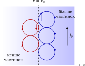

Елементи фізики плазми
5 Гідродинамічний та магнітогідродинамічний опис
До цього моменту ми розглядали переважно окремі частинки. Але в багатьох задачах не потрібно знати траєкторію кожної з них: достатньо знати усереднені поля густини, швидкості, тиску та електромагнітного поля. У цьому розділі ми піднімаємося від двох рідин до однорідинної МГД, розбираємо альвенівську швидкість, рівновагу, діамагнетизм, вмороженість і пересполучення поля, зв’язуємо рідинну мову з частинковою й завершуємо магнітними вимірами.
§ 5.1 Гідродинамічний опис не є синонімом частих зіткнень
З загальної фізики відомо, що газ чи рідину описують не окремими молекулами, а полями густини \(\rho \), швидкості \(\vect v\) і тиску \(p\) та рівняннями гідродинаміки (їх нагадує врізка нижче). Це працює тому, що часті зіткнення швидко вирівнюють розподіл молекул за швидкостями, і тоді стан газу в кожній точці цілком задають саме ці три величини. У плазмі зіткнень може бути мало, проте для повільних і великомасштабних рухів рідинні рівняння все одно можуть годитися: плазму як ціле визначають усереднені величини, а подробиці розподілу частинок за швидкостями (скажімо, невелика група швидких частинок) на неї майже не впливають. Тому в плазмі співіснують кінетичний опис (стежимо за розподілом частинок за швидкостями) та рідинний (стежимо лише за усередненими полями).
Рідинний опис, у свою чергу, буває двох видів. У дворідинному електрони й іони описують окремо, кожні своєю густиною, швидкістю й тиском; в однорідинному — він і є магнітною гідродинамікою (МГД) — плазму розглядають як одну провідну рідину. Обидва виведемо нижче. Але коли рідинний опис взагалі припустимий? У магнітному полі частинка обертається навколо силової лінії по колу з ларморівським радіусом \(r_L\) і циклотронною частотою \(\omega _c\) (розд. 3). Якщо поле й густина змінюються на відстанях \(L\), значно більших за радіус іонного кола, і повільно порівняно з частотою його обертання,
\(\seteqnumber{0}{5.}{0}\)\begin{equation*} L\gg r_{Li},\qquad \omega \ll \omega _{ci}, \end{equation*}
то частинка за час зміни поля багато разів обертається й лишається прив’язаною до своєї силової лінії. Тоді поперек поля плазма поводиться як суцільне середовище навіть без зіткнень; чому саме, пояснено в § 5.11. Однак цих умов недостатньо: рівняння рідини треба ще замкнути (про це — у врізці нижче й в підрозділі «Замикання системи та межі застосовності»), а найпростіша модель зі скалярним тиском вимагає, щоб тиск встигав вирівнятися за напрямками. Якщо умови порушуються, треба повертатися до дворідинного або кінетичного опису.
§ 5.2 Дворідинний опис
Теоретичні відомості Нагадаємо з гідродинаміки
Для звичайної рідини з густиною \(\rho \) і швидкістю \(\vect v\) маємо рівняння неперервності \(\partial _t\rho +\nabla \cdot (\rho \vect v)=0\) та рівняння Ейлера
\[\rho \Bigl (\frac {\partial \vect v}{\partial t}+(\vect v\cdot \nabla )\vect v\Bigr )=-\nabla p+\vect f,\]
де \(\vect f\) — об’ємна сила, а в’язкість додає член Нав’є–Стокса \(\mu \nabla ^2\vect v\) (\(\mu \) — динамічна в’язкість). Ліва частина — густина, помножена на прискорення елемента рідини, яке записують як \(D\vect v/Dt\). Тут
\[\frac {D}{Dt}=\frac {\partial }{\partial t}+(\vect v\cdot \nabla )\]
називають субстанціальною (повною) похідною: це швидкість зміни величини в точці, що рухається разом із рідиною. Перший доданок дає зміну в нерухомій точці, а \((\vect v\cdot \nabla )\) враховує, що течія переносить елемент у місце з іншим значенням цієї величини. Сила тиску на елемент \(dV=dx\,dy\,dz\) (рис. 5.1) виникає через перепад тиску на протилежних гранях: \(df_x=[p(x)-p(x+dx)]\,dy\,dz=-(\partial p/\partial x)\,dV\), а разом по трьох осях \(d\vect f_p=-\nabla p\,dV\) — вона напрямлена від більшого тиску до меншого. Зверніть увагу на проблему замикання: рівняння для \(\rho \) містить \(\vect v\), рівняння для \(\vect v\) — тиск \(p\), рівняння для \(p\) — потік тепла і т. д. Ланцюжок обривають моделлю стану (наприклад, \(p\propto \rho ^\gamma \)). Нижче рівняння для електронної та іонної «рідин» читаються як «Ейлер + сила Лоренца + тертя \(\vect R\)».
Найприродніший гідродинамічний крок — не відразу зливати електрони та іони в одну рідину, а описувати їх окремо. Для кожного компонента вводимо концентрацію \(n_s\) і середню швидкість \(\vect v_s\). Рівняння неперервності мають вигляд
\(\seteqnumber{0}{5.}{0}\)\begin{equation*} \frac {\partial n_s}{\partial t} +\nabla \cdot (n_s\vect v_s)=0. \end{equation*}
Рівняння руху — це рівняння Ейлера для кожного компонента, із силою Лоренца, градієнтом тиску та силою зіткнень (\(D_s/Dt=\partial _t+(\vect v_s\cdot \nabla )\) — похідна вздовж руху компонента \(s\)):
\(\seteqnumber{0}{5.}{0}\)\begin{equation*} m_s n_s\frac {D_s\vect v_s}{Dt} = q_s n_s\left (\vect E+\frac 1c\vect v_s\times \vect B\right ) -\nabla p_s+\vect R_s. \end{equation*}
Вираз \(\vect E+\vect v_s\times \vect B/c\) (для \(v_s\ll c\)) — це електричне поле в системі відліку, що рухається разом із компонентом \(s\): у ній магнітна сила, яку відчуває частинка, виглядає як чисто електрична. Сума \(\sum _s\vect R_s=0\): зіткнення передають імпульс між компонентами, але не створюють його. Тут ці рівняння записано за аналогією з гідродинамікою; їхній систематичний вивід як моментів кінетичного рівняння (і звідки береться тензор тиску замість скалярного \(p_s\)) наведено в § 7.5.
Для квазінейтральної водневої плазми \(n_e\simeq n_i=n\) та \(m_e\ll m_i\). Важливо побачити, що однорідинна МГД не вводиться незалежно від дворідинної моделі: її основні рівняння можна отримати безпосередньо, додаючи рівняння руху електронів та іонів і окремо використовуючи рівняння для електронів.
§ 5.3 Від дворідинної моделі до однорідинної МГД
Для однозарядної плазми (\(q_i=e\), \(q_e=-e\)) ті самі рівняння руху для іонів та електронів мають вигляд
\(\seteqnumber{0}{5.}{0}\)\begin{equation*} m_i n_i\frac {D_i\vect v_i}{Dt} = en_i\left (\vect E+\frac 1c\vect v_i\times \vect B\right ) -\nabla p_i+\vect R_{ie}, \end{equation*}
\(\seteqnumber{0}{5.}{0}\)\begin{equation*} m_e n_e\frac {D_e\vect v_e}{Dt} =-en_e\left (\vect E+\frac 1c\vect v_e\times \vect B\right ) -\nabla p_e+\vect R_{ei}, \end{equation*}
де \(\vect R_{ei}=-\vect R_{ie}\) виражає взаємну передачу імпульсу під час зіткнень.
Сума рівнянь: рівняння руху плазми як цілого
Введемо масову густину та масову швидкість плазми:
\(\seteqnumber{0}{5.}{0}\)\begin{equation*} \rho _m=m_i n_i+m_e n_e, \qquad \vect v= \frac {m_i n_i\vect v_i+m_e n_e\vect v_e}{\rho _m}. \end{equation*}
Для \(m_e\ll m_i\) маємо \(\rho _m\simeq m_i n_i\) і \(\vect v\simeq \vect v_i\). Додаючи рівняння руху електронів та іонів, внутрішні сили зіткнень взаємно скорочуються. У квазінейтральній плазмі \(n_e\simeq n_i\) скорочується також сумарна електрична сила:
\(\seteqnumber{0}{5.}{0}\)\begin{equation*} en_i\vect E-en_e\vect E\simeq 0. \end{equation*}
Магнітні сили, навпаки, не скорочуються, оскільки електрони та іони рухаються з різними швидкостями. Використовуючи
\(\seteqnumber{0}{5.}{0}\)\begin{equation*} \vect j=e n_i\vect v_i-e n_e\vect v_e, \end{equation*}
їхня сума набуває вигляду
\(\seteqnumber{0}{5.}{0}\)\begin{equation*} \frac {e n_i}{c}\vect v_i\times \vect B - \frac {e n_e}{c}\vect v_e\times \vect B = \frac 1c\vect j\times \vect B. \end{equation*}
Якщо нехтувати різницею \(\vect v_e-\vect v_i=-\vect j/en\) у конвективних членах \((\vect v_s\cdot \nabla )\vect v_s\) (для звичайної низькочастотної МГД це мала поправка), дістаємо
\(\seteqnumber{0}{5.}{0}\)\begin{equation} \label {eq:one-fluid-momentum-from-two-fluid} \boxed { \rho _m\frac {D\vect v}{Dt} = -\nabla (p_i+p_e) + \frac 1c\vect j\times \vect B. } \end{equation}
Тут \(D/Dt=\partial _t+(\vect v\cdot \nabla )\) — та сама похідна вздовж руху, але вже за швидкістю \(\vect v\) плазми як цілого. Позначивши \(p=p_i+p_e\), одержуємо рівняння руху плазми як однієї (однорідинної) рідини.
Точно так само, додаючи рівняння неперервності двох компонент, помножені на \(m_s\), отримуємо рівняння неперервності для єдиної рідини:
\(\seteqnumber{0}{5.}{1}\)\begin{equation} \label {eq:one-fluid-continuity-from-two-fluid} \boxed { \frac {\partial \rho _m}{\partial t} + \nabla \cdot (\rho _m\vect v)=0. } \end{equation}
Електронне рівняння: закон Ома
Тепер скористаємося рівнянням для електронів. Для квазінейтральної плазми покладемо \(n_e\simeq n_i=n\) та, для простоти, \(\vect v\simeq \vect v_i\). Тоді
\(\seteqnumber{0}{5.}{2}\)\begin{equation*} \vect v_e=\vect v-\frac {\vect j}{en}. \end{equation*}
Підставимо це у рівняння руху електронів і покладемо \(m_e\to 0\) (інерція електронів нехтовна):
\[0=-en\Bigl (\vect E+\frac {\vect v_e\times \vect B}c\Bigr )-\nabla p_e+\vect R_{ei},\qquad \vect R_{ei}=\frac {en}{\sigma }\,\vect j.\]
Зіткнення електронів з іонами дають силу тертя \(\vect R_{ei}=en\vect j/\sigma \) (знак відповідає гальмуванню відносного руху). Підстановка \(\vect v_e=\vect v-\vect j/en\) дає \(-en\bigl (\vect E+\vect v\times \vect B/c\bigr )+\vect j\times \vect B/c-\nabla p_e+en\vect j/\sigma =0\), і після ділення на \(en\):
\(\seteqnumber{0}{5.}{2}\)\begin{equation} \label {eq:generalized-ohm-from-two-fluid} \tcbhighmath { \vect E+\frac 1c\vect v\times \vect B = \frac {\vect j}{\sigma } + \frac {\vect j\times \vect B}{enc} - \frac {\nabla p_e}{en}. } \end{equation}
Ліва частина — електричне поле в системі відліку, що рухається разом із плазмою, тобто (оскільки \(\vect v\simeq \vect v_i\)) з іонами. Перший доданок праворуч описує опір зіткненням, другий є холлівським доданком, а третій виникає через градієнт електронного тиску. Холлівський доданок важливий на масштабах порядку іонної інерційної довжини \(c/\omega _{pi}\): на менших масштабах іони «відклеюються» від поля, а електрони ще ні (токамак, \(n=10^{14}~\mathrm {см}^{-3}\): \(c/\omega _{pi}\) від \(2\) до \(3\) см; магнітосфера, \(n\sim 1~\mathrm {см}^{-3}\): \(\approx 230\) км). Поки права частина мала, поле «вморожене» в плазму; що це означає, пояснено нижче. Опір та інерція електронів (яку ми відкинули) вмороженість порушують, але лише в тонких шарах, де вони стають помітними; там силові лінії можуть пересполучатися (§ 5.10). Холлівський доданок цього сам не дає: на масштабах менших за \(c/\omega _{pi}\) він лише означає, що поле вморожене в електрони, а не в іони. Нехтуючи всіма цими поправками, отримуємо закон ідеальної МГД: у системі відліку, що рухається разом із плазмою, електричного поля немає:
\(\seteqnumber{0}{5.}{3}\)\begin{equation} \label {eq:ideal-mhd-ohm} \tcbhighmath { \vect E+\frac 1c\vect v\times \vect B=0. } \end{equation}
Таким чином, перехід має чітку фізичну структуру (рис. 5.2).
Саме тому МГД слід розглядати як довгохвильову низькочастотну границю (за \(L\gg r_{Li}\) і \(\omega \ll \omega _{ci}\), коли відкинуті в законі Ома члени малі) більш повного дворідинного опису, а не як незалежну систему рівнянь.
§ 5.4 Основне рівняння магнітної гідродинаміки
Перейдемо до макроскопічного опису плазми, розглядаючи її як суцільне провідне середовище з масовою густиною \(\rho _m(\vect r,t)\), гідродинамічною швидкістю \(\vect v(\vect r,t)\) та газокінетичним тиском \(p(\vect r,t)\).
Рівняння руху такого середовища (5.1) вже виведено з двох рідин. Тут розберемо зміст його доданків. Перший — сила газокінетичного тиску \(-\nabla p\,dV\) на елемент об’єму \(dV\) (рис. 5.1, див. врізку «Нагадаємо з гідродинаміки»).
Другий доданок — магнітна складова сили Лоренца, \(d\vect f_{\mathrm {em}}=\vect j\times \vect B\,dV/c\). Електрична сила \(\rho _q\vect E\) тут відсутня: у квазінейтральній плазмі густина нескомпенсованого заряду \(\rho _q\) мала, і сумарна електрична сила скорочується (вона скорочується в сумі рівнянь, а малість \(\rho _q\vect E\) оцінено нижче, у підрозділі «Чому можна нехтувати електричною силою»). За другим законом Ньютона для маси \(dm=\rho _m\,dV\) маємо \(\rho _m\,D\vect v/Dt=-\nabla p+\vect j\times \vect B/c\). Отже, рух плазми визначається градієнтом газокінетичного тиску та магнітною силою Лоренца.
Виключення густини струму за законом Ампера
Розглянемо повільні (\(v\ll c\)) макроскопічні процеси, для яких струмом зміщення в законі Ампера можна знехтувати. Тоді
\(\seteqnumber{0}{5.}{4}\)\begin{equation*} \vect j=\frac {c}{4\pi }\,\rot \vect B. \end{equation*}
Це зручно, бо в плазмі струми зазвичай невідомі, а поле — те, що ми задаємо котушками. Підставляючи цей вираз у рівняння руху, отримуємо основне рівняння магнітної гідродинаміки (МГД):
\(\seteqnumber{0}{5.}{4}\)\begin{equation} \label {eq:MHD-equation} \tcbhighmath { \rho _m\frac {D\vect v}{Dt} = -\nabla p + \frac {1}{4\pi }\, (\rot \vect B)\times \vect B.} \end{equation}
Отже, на відміну від звичайної гідродинаміки, на рух плазми безпосередньо діє магнітне поле — через силу Лоренца. Це повне поле: воно складається з поля котушок і поля струмів у самій плазмі.
Скориставшись векторною тотожністю \((\rot \vect B)\times \vect B=(\vect B\cdot \nabla )\vect B-\nabla (B^2/2)\), перепишемо це рівняння. (Тотожність випливає з \(\nabla (B^2/2)=(\vect B\cdot \nabla )\vect B+\vect B\times (\rot \vect B)\), або в компонентах (\(\varepsilon _{ijk}\) — символ Леві-Чивіти): \([(\rot \vect B)\times \vect B]_i=\varepsilon _{ijk}\varepsilon _{jlm}\partial _lB_m\,B_k=B_k\partial _kB_i-B_k\partial _iB_k\).)
\(\seteqnumber{0}{5.}{5}\)\begin{equation} \label {eq:MHD-pressure-tension} \rho _m\frac {D\vect v}{Dt}= \underbrace {-\nabla \left (p+\frac {B^2}{8\pi }\right )}_{\text {тиск: газовий $p$ і~магнітний $B^2/8\pi $}} +\underbrace {\frac 1{4\pi }\,(\vect B\cdot \nabla )\vect B}_{\text {натяг силових ліній}}. \end{equation}
Тут два фізично різні доданки (рис. 5.3). Перший — магнітний тиск \(B^2/8\pi \), що додається до газового. Другий — натяг силових ліній: вздовж викривленої лінії з радіусом кривизни \(R_c\) діє сила на одиницю об’єму \(B^2/(4\pi R_c)\), напрямлена до центра кривизни, ніби лінії — розтягнуті гумові шнури.
Замикання системи та межі застосовності
Рівняння (5.5) саме по собі не утворює замкненої системи. Для визначення густини, швидкості, тиску та магнітного поля необхідні додаткові рівняння.
Зокрема, до рівняння руху додають:
-
1. рівняння неперервності
\(\seteqnumber{0}{5.}{6}\)\begin{equation*} \frac {\partial \rho _m}{\partial t} + \nabla \cdot (\rho _m\vect v) =0; \end{equation*}
-
2. рівняння стану, наприклад адіабатичне
\(\seteqnumber{0}{5.}{6}\)\begin{equation*} \frac {D}{Dt}\bigl (p\rho _m^{-\gamma }\bigr )=0 \quad (\text {тобто }p\rho _m^{-\gamma }=\mathrm {const}\text { вздовж руху елемента плазми}); \end{equation*}
Тут показник адіабати \(\gamma =5/3\) для одноатомного ізотропного газу, якщо теплопровідність повільна порівняно з динамікою. Уздовж \(\vect B\) умова повільної теплопровідності зазвичай порушена (довга довжина пробігу, розд. 6 і нижче), тому електрони там ближчі до ізотермічних (\(\gamma _e\to 1\)).
-
3. закон Ома, який пов’язує \(\vect E\), \(\vect B\), \(\vect v\) та \(\vect j\). У простій резистивній МГД електричне поле в системі відліку, що рухається разом із плазмою, \(\vect E+\vect v\times \vect B/c\), задає омічну складову струму:
\(\seteqnumber{0}{5.}{6}\)\begin{equation} \label {eq:Ohm_law_plasma} \vect j=\sigma \left (\vect E+\frac {1}{c}\,\vect v\times \vect B\right ). \end{equation}
Це резистивний закон Ома для однорідинної МГД; \(\sigma \) тут — скаляр, тобто \(\sigma _\parallel \) (провідність уздовж поля). Поперек поля питомий опір повністю іонізованої плазми лише приблизно вдвічі більший, \(\eta _\perp \approx 2\eta _\parallel \), а не в \((\omega _{ce}/\nu )^2\) разів (\(\nu \) — частота зіткнень електронів з нейтралами), як було б у слабоіонізованому газі. Значення \(\eta _\parallel =5{,}2\times 10^{-5}\,\ln \Lambda /T^{3/2}\) Ом\(\cdot \)м (де \(T\) в еВ) і множник 2 обчислив Л. Спітцер, урахувавши віддачу іонів у кожному зіткненні й усереднення за розподілом електронів [4]. Причина малості поперечного опору: сила тертя між електронами та іонами залежить лише від їхньої відносної швидкості, тобто від струму \(\vect j\), а спільний дрейф \(\vect E\times \vect B\), у якому рухається вся плазма, тертя не створює. Нейтральний газ, навпаки, нерухомий, і він гальмує поперечний рух електронів. Точніший дворідинний закон Ома (5.3) містить також холлівський доданок \(\vect j\times \vect B/enc\) і градієнт електронного тиску \(-\nabla p_e/en\), а якщо не нехтувати інерцією електронів — ще й \(-(m_e/e)\,d\vect v_e/dt\). У простій резистивній МГД всі ці поправки вважаються малими.
-
4. рівняння Максвелла, зокрема
\(\seteqnumber{0}{5.}{7}\)\begin{equation*} \nabla \cdot \vect B=0, \qquad \frac {\partial \vect B}{\partial t} = -c\,\rot \vect E. \end{equation*}
Електричне поле в цій системі знаходять із закону Ома, а не з рівняння Пуассона: за квазінейтральності \(\rho _q=\nabla \cdot \vect E/4\pi \) є наслідком, а не незалежною змінною. Зате струм мусить замикатися, \(\nabla \cdot \vect j=0\) (без струму зміщення це випливає з закону Ампера); якщо замкнутися йому нікуди, заряд накопичується, доки створене ним поле не зупинить рух зарядів.
МГД-наближення призначене для великомасштабних (\(L\gg r_{Li}\)) та повільних (\(\omega \ll \omega _{ci}\)) процесів, у яких індивідуальний рух частинок майже не впливає на плазму як ціле. Чому ця умова працює навіть без зіткнень, пояснено нижче, у підрозділі «Що насправді дозволяє перейти до середовища».
§ 5.5 Альвенівська швидкість і число Альвена
Рівняння МГД показує, що магнітне поле має не лише тиск, а й натяг. Це означає, що викривлення силових ліній може породжувати хвилю: магнітний натяг \(B^2/4\pi \) відіграє роль натягу струни, а \(\rho _m\) — роль густини маси струни. Така альвенівська хвиля біжить уздовж однорідного поля \(\vect B_0\) зі швидкістю
\(\seteqnumber{0}{5.}{7}\)\begin{equation} \label {eq:alfven-wave} \tcbhighmath {v_A=\frac {B_0}{\sqrt {4\pi \rho _m}}} \end{equation}
(повне виведення з лінеаризованих рівнянь МГД та інші моди — у розд. 6).
Альвенівська швидкість \(v_A\) — один із головних масштабів швидкості в МГД: з нею порівнюють швидкість течії плазми, а час \(L/v_A\) є характерним часом магнітних процесів на масштабі \(L\). Значення \(v_A\) для токамака, сонячної корони та сонячного вітру наведено в табл. 6.1 розд. 6. Відношення
\(\seteqnumber{0}{5.}{8}\)\begin{equation*} M_A=\frac {v}{v_A} \end{equation*}
називають числом Альвена. За \(M_A\ll 1\) магнітні сили здатні істотно впливати на рух, тоді як за \(M_A\gg 1\) інерційний рух домінує над альвенівським відновлювальним механізмом. Це порівняння (\(v\) і \(v_A\) беруть в одній точці) є локальним і не є самостійним критерієм застосовності МГД.
Альвенівська хвиля — лише одна з хвиль замагніченої плазми. Зовнішнє поле \(\vect B_0\) робить реакцію плазми анізотропною: рух уздовж поля та поперек нього фізично різний. У низькочастотній границі \(\omega \ll \omega _{ci}\) це дає МГД-хвилі (альвенівську, швидку й повільну магнітозвукові), а при вищих частотах потрібен тензорний опис холодної замагніченої плазми. Обидва випадки систематично розглянуто в розд. 6.
§ 5.6 МГД-рівновага та магнітні поверхні
Розглянемо тепер стаціонарну плазму, в якій \(\vect v=0\). Рівняння руху перетворюється на умову рівноваги:
\(\seteqnumber{0}{5.}{8}\)\begin{equation} \label {eq:equilibrium} \nabla p = \frac {1}{c}\,\vect j\times \vect B. \end{equation}
Це рівняння показує, що в рівновазі градієнт тиску компенсується магнітною силою Лоренца.
Корисно мати ще один еквівалентний опис магнітної сили. Використовуючи закон Ампера та \(\nabla \cdot \vect B=0\), можна записати
\(\seteqnumber{0}{5.}{9}\)\begin{equation} \label {eq:maxwell-stress} f_i=\partial _jT_{ij}, \qquad T_{ij}= \frac {1}{4\pi } \left (B_iB_j-\frac {B^2}{2}\delta _{ij}\right ). \end{equation}
Тут \(f_i\) — \(i\)-та компонента магнітної сили \(\vect j\times \vect B/c\) на одиницю об’єму, \(T_{ij}\) — тензор натягів Максвелла. У цьому тензорі перший доданок відповідає натягу вздовж поля, а другий — магнітному тиску. Такий запис особливо зручний для задач про сили на плазмові шнури та магнітні поверхні.
Скалярно помножимо (5.9) на \(\vect B\). Оскільки \(\vect B\cdot (\vect j\times \vect B)=0\), маємо
\(\seteqnumber{0}{5.}{10}\)\begin{equation*} \vect B\cdot \nabla p=0. \end{equation*}
Отже, магнітні силові лінії лежать на поверхнях сталого тиску:
\(\seteqnumber{0}{5.}{10}\)\begin{equation*} p=\mathrm {const}. \end{equation*}
Аналогічно, скалярний добуток (5.9) на \(\vect j\) дає
\(\seteqnumber{0}{5.}{10}\)\begin{equation*} \vect j\cdot \nabla p=0, \end{equation*}
тобто густина струму також лежить у дотичній площині до поверхонь сталого тиску.
Це зображено на рис. 5.4: і силові лінії, і лінії струму намотуються на вкладені поверхні \(p=\mathrm {const}\), а градієнт тиску \(\nabla p\) напрямлений по нормалі до них, до осі.
У тороїдальних магнітних системах такі поверхні утворюють вкладені одна в одну магнітні поверхні. Їхня геометрія є основою опису рівноваги плазми в токамаках і стелараторах.
З (5.9) можна також знайти поперечну складову густини струму. Векторно помноживши це рівняння на \(\vect B\), дістаємо
\(\seteqnumber{0}{5.}{10}\)\begin{equation*} \vect j_\perp = \frac {c}{B^2}\, \vect B\times \nabla p. \end{equation*}
Це саме діамагнітний струм (5.14), який детальніше розглянуто в § 5.8.
Параметр плазми \(\beta \)
Важливим безрозмірним параметром плазми є відношення газокінетичного тиску до магнітного:
\(\seteqnumber{0}{5.}{10}\)\begin{equation} \label {eq:beta} \tcbhighmath { \beta = \frac {p}{B^2/(8\pi )} = \frac {8\pi p}{B^2}. } \end{equation}
Параметр \(\beta \) показує, що в рівновазі сильніше: тиск плазми чи тиск магнітного поля. Він не є критерієм застосовності МГД: ідеальна МГД справедлива за будь-якого \(\beta \) (за умов \(L\gg r_{Li}\), \(\omega \ll \omega _{ci}\)), тоді як \(\beta \) лише вказує, наскільки сильно плазма деформує поле.
-
• За \(\beta \ll 1\) магнітний тиск значно перевищує газокінетичний, тому плазма відносно слабо впливає на конфігурацію магнітного поля.
-
• За \(\beta \sim 1\) газокінетичний та магнітний тиски порівнянні, тому взаємний вплив плазми та магнітного поля стає істотним.
Таким чином (рис. 5.5), \(\beta \) характеризує співвідношення двох основних механізмів, що визначають рівновагу плазми — її внутрішнього тиску та магнітного утримання. Для заданого магнітного поля велике значення \(\beta \) відповідає великому тиску плазми, однак досягнення такого стану визначається також умовами магнітного утримання та стійкістю плазми. Для порівняння: токамак \(\beta \sim 3\,\%\), сферичний токамак до \(\sim 40\,\%\) [4], магнітосфера Землі \(\beta \ll 1\), сонячна корона від \(10^{-3}\) до \(10^{-2}\), фотосфера \(\gtrsim 1\), сонячний вітер \(\sim 1\).
За \(\beta \ll 1\) тиск плазми не здатен врівноважити силу Лоренца, тож рівновага вимагає \(\vect j\times \vect B\approx 0\), тобто \(\vect j\parallel \vect B\) (безсилове поле); так влаштовані сонячна корона та поздовжній струм токамака.
Тиск \(p\) визначається термодинамічним станом плазми; для класичної ідеальної плазми він задається формулою (1.16).

§ 5.7 Енергія електромагнітного поля та плазми
Теорема Пойнтінга в системі СГС має вигляд
\(\seteqnumber{0}{5.}{11}\)\begin{equation} \label {eq:poynting-theorem-plasma} \frac {\partial }{\partial t}\left (\frac {E^2+B^2}{8\pi }\right ) +\nabla \cdot \left (\frac {c}{4\pi }\vect E\times \vect B\right ) =-\vect j\cdot \vect E. \end{equation}
Ліва частина описує зміну густини енергії поля та її потік, права — локальну передачу енергії від поля до заряджених частинок. Якщо \(\vect j\cdot \vect E>0\), поле віддає плазмі енергію.
У МГД енергетичний баланс пов’язує рух середовища, магнітне поле та нагрів. Для ідеальної МГД (без дисипації) з адіабатичним замиканням повна густина енергії \(\mathcal E=\rho _mv^2/2+p/(\gamma -1)+B^2/8\pi \) (кінетична, теплова й магнітна) зберігається:
\(\seteqnumber{0}{5.}{12}\)\begin{equation} \label {eq:mhd-energy} \frac {\partial \mathcal E}{\partial t} +\nabla \cdot \left [\Bigl (\frac {\rho _mv^2}2+\frac {\gamma p}{\gamma -1}\Bigr )\vect v +\frac {c}{4\pi }\,\vect E\times \vect B\right ]=0, \qquad \frac {c}{4\pi }\vect E\times \vect B=\frac {B^2\vect v-(\vect v\cdot \vect B)\vect B}{4\pi }, \end{equation}
де останній вираз — потік Пойнтінга в ідеальній МГД (\(c\vect E=-\vect v\times \vect B\)). З урахуванням скінченної провідності в балансі магнітної й кінетичної енергій з’являється дисипативний член \(-j^2/\sigma \) (джоулеве тепло); якщо врахувати й теплову енергію, повна енергія знову зберігається: джоулеве тепло лише переводить магнітну та кінетичну енергії в теплову. Кожен доданок має чітке значення: робота \(\vect v\cdot (\vect j\times \vect B)/c\) перекачує енергію між рухом і магнітним полем; поле вморожене, тому розтягування силових ліній збільшує \(B^2/8\pi \) коштом кінетичної енергії, а обмін між кінетичною й тепловою енергіями відбувається через роботу стиснення \(p\,\nabla \cdot \vect v\) (у рівнянні для теплової енергії) та \(-\vect v\cdot \nabla p\) (у рівнянні для кінетичної); у сумі вони дають потік \(\nabla \cdot (p\vect v)\). Тому енергія — зручна перевірка наближень: якщо після відкидання якогось члена рівнянь повна енергія перестає зберігатися (для ідеальної МГД), цей член відкинуто безпідставно.
§ 5.8 Діамагнетизм плазми
Кожна заряджена частинка плазми у магнітному полі має орбітальний магнітний момент (3.7), напрямлений проти поля. Якщо в одиниці об’єму є \(n_s\) частинок сорту \(s\), то намагніченість
\(\seteqnumber{0}{5.}{13}\)\begin{equation*} \vect M=-\sum _sn_s\mu _s\frac {\vect B}{B}=-\sum _sn_s\frac {T_s}{B}\frac {\vect B}{B}=-\frac p{B^2}\,\vect B, \end{equation*}
де враховано \(\langle mv_\perp ^2/2\rangle =T\) (два ступені вільності поперек поля) і \(p=\sum _sn_sT_s\). Намагніченість напрямлена проти поля, тобто плазма діамагнітна: її магнітна сприйнятливість (\(M=\kappa H\), \(H\approx B\)) від’ємна, \(\kappa =-p/B^2<0\), тому вона виштовхується з області сильного поля.
Діамагнетизм виявляється через струми. У неоднорідній плазмі (\(p\) змінюється в просторі) вони дорівнюють \(\vect j=c\,\nabla \times \vect M\), що при \(B=\mathrm {const}\) дає
\(\seteqnumber{0}{5.}{13}\)\begin{equation} \label {eq:diamagnetic-current} \vect j_\perp =\frac {c}{B^2}\,\vect B\times \nabla p. \end{equation}
Той самий результат одержується з умови рівноваги \(\nabla p=\vect j\times \vect B/c\) (див. (5.9)). Щоб побачити наслідок, розглянемо плоский шар, у якому \(p=p(x)\) і поле \(\vect B=B(x)\vect e_z\). Тоді \(j_y=-(c/4\pi )\,dB/dx\), і умова рівноваги \(dp/dx=j_yB/c\) дає
\(\seteqnumber{0}{5.}{14}\)\begin{equation} \label {eq:pressure-balance} p+\frac {B^2}{8\pi }=\mathrm {const}. \end{equation}
Де тиск плазми більший, поле послаблене, а де менший — сильніше: плазма «виштовхує» поле, а поле стискає плазму. Рівняння (5.15) формулює баланс газокінетичного (\(p\)) і магнітного (\(B^2/8\pi \)) тисків [4].1
1 Строго кажучи, у класичній системі в термодинамічній рівновазі повна намагніченість дорівнює нулю (теорема Бора — ван Левен): діамагнетизм орбіт компенсується струмами частинок, що ковзають поблизу стінок. Але в неоднорідній плазмі об’ємні струми \(c\,\nabla \times \vect M\) не компенсуються — саме вони й визначають рівновагу.
§ 5.9 Вмороженість магнітного поля
З закону Ома (5.7)
\(\seteqnumber{0}{5.}{15}\)\begin{equation*} \vect E=-\vect v\times \vect B/c+c\,\rot \vect B/(4\pi \sigma ). \end{equation*}
Підставляючи в закон індукції \(\partial _t\vect B=-c\,\rot \vect E\) і враховуючи \(\nabla \cdot \vect B=0\), одержуємо рівняння індукції
\(\seteqnumber{0}{5.}{15}\)\begin{equation} \label {eq:induction} \frac {\partial \vect B}{\partial t}=\rot (\vect v\times \vect B)+\frac {c^2}{4\pi \sigma }\Delta \vect B. \end{equation}
Перший доданок описує перенесення поля течією, другий — дифузію поля. Їхнє відношення визначає магнітне число Рейнольдса
\(\seteqnumber{0}{5.}{16}\)\begin{equation*} R_m\sim \frac {4\pi \sigma Lv}{c^2}. \end{equation*}
Для рідких металів у лабораторії (ртуть, галій) \(R_m\) від \(10^{-2}\) до \(1\); для токамака \(R_m\sim 10^{8}\); для сонячної корони \(\sim 10^{14}\). Отже, у космосі вмороженість — майже точний закон, а в лабораторних рідких металах — ні.
Ідеальна провідність (\(R_m\gg 1\))
Нехай у плазмі існує магнітне поле — створене зовнішніми котушками, струмом самої плазми або успадковане від джерела разом із плазмою. Якщо провідність дуже велика, дифузійним доданком у (5.16) можна знехтувати, і рівняння індукції зводиться до
\(\seteqnumber{0}{5.}{16}\)\begin{equation*} \frac {\partial \vect B}{\partial t}=\rot (\vect v\times \vect B). \end{equation*}
З нього випливає теорема Альвена: магнітний потік крізь будь-який контур, що рухається разом із плазмою, зберігається [16]. Кажуть, що силові лінії «вморожені» в плазму — плазма не перетинає їх, а поле рухається разом із нею. Саме ця властивість лежить в основі магнітного утримання: рухаючи плазму, ми переносимо разом із нею і поле.
Доведення «на пальцях». Потік \(\Phi \) крізь контур, що рухається з плазмою, змінюється з двох причин: (а) через \(\partial \vect B/\partial t\) і (б) через те, що бічна поверхня, яку описує контур за час \(dt\), перетинає силові лінії. Другий внесок дорівнює \(-\oint (\vect v\times \vect B)\cdot d\vect l\). З \(\partial _t\vect B=-c\,\rot \vect E\) і теореми Стокса
\[\frac {d\Phi }{dt}=-c\oint \Bigl (\vect E+\frac 1c\vect v\times \vect B\Bigr )\cdot d\vect l=0,\]
бо \(\vect E+\vect v\times \vect B/c=0\) (ідеальний закон Ома). Наслідок (з рівняння індукції та неперервності): \(d(\vect B/\rho _m)/dt=(\vect B/\rho _m\cdot \nabla )\vect v\); він знадобиться для стискання плазми й для динамо.
Звідси прості закони стискання, які випливають зі збереження потоку \(\Phi =BS=\mathrm {const}\). При стисненні лише поперек поля площа перерізу \(S\propto 1/\rho _m\), тому \(B\propto \rho _m\), тобто \(B/\rho _m=\mathrm {const}\) (\(B^2\propto \rho _m^2\), ефективний показник адіабати \(\gamma _\perp =2\)). Уздовж поля площа \(S\) не змінюється, тому \(B=\mathrm {const}\). При ізотропному стисненні всі розміри змінюються однаково: довжина \(\ell \), \(S\propto \ell ^2\), \(\rho _m\propto \ell ^{-3}\), звідки \(B\propto 1/S\propto \ell ^{-2}\propto \rho _m^{2/3}\). Тоді тиск поля \(B^2/8\pi \propto \rho _m^{4/3}\), тобто \(\gamma =4/3\).
Теорема Альвена не каже, звідки взялося поле: вона описує лише його рух, коли поле вже є. На практиці порядок зазвичай зворотний до того, що описує теорема — спершу поле, потім плазма. У токамаку чи стелараторі котушки вмикають до пуску (вакуум і нейтральний газ поле не екранують), а потім газ іонізують у готовому полі. У космосі плазма народжується з газу, де вже є слабке поле, а стискання зберігає потік, і поле зростає (\(B\propto \rho _m^{2/3}\) при ізотропному стисненні). Так, імовірно, виникає поле радіопульсарів (\(\sim 10^{12}\) Гс); для магнетарів (від \(10^{14}\) до \(10^{15}\) Гс) самого стиснення, найпевніше, замало, і вважають, що додатково діє динамо (про нього — нижче).
Скінченна провідність: дифузія поля
У реальній плазмі провідність скінченна, тому другий доданок у (5.16) уже не можна відкинути. Нехай для простоти плазма нерухома (\(\vect v=0\)). Тоді рівняння індукції набирає вигляду рівняння дифузії
\(\seteqnumber{0}{5.}{16}\)\begin{equation*} \frac {\partial \vect B}{\partial t} =\frac {c^2}{4\pi \sigma }\,\Delta \vect B, \end{equation*}
тобто наявне неоднорідне поле з часом розмивається: струми, що підтримують неоднорідність, загасають через джоулеві втрати. Характерний час цього розмиття на масштабі \(L\)
\(\seteqnumber{0}{5.}{16}\)\begin{equation*} \tau _d=\frac {4\pi \sigma L^2}{c^2}. \end{equation*}
Числова оцінка. Лабораторна плазма (\(T_e=1\) кеВ, \(L=1\) м): \(\tau _d\approx 50\) с, тому поле треба весь час підтримувати зовнішніми джерелами. Сонячна корона (\(T\sim 100\) еВ, \(L\sim 10^{10}\) см): \(\tau _d\sim 10^{16}\) с \(\approx 3\times 10^{8}\) років, що набагато більше за часи коронних процесів (від хвилин до діб). Тому там дифузією можна знехтувати й користуватися наближенням вмороженості.
Дифузія діє в обидва боки: поле розтікається від місця, де його більше, до місця, де менше. Поле, яке було в плазмі, повільно виходить назовні; зовнішнє поле так само повільно проникає в плазму, що його не мала, за час \(\tau _d\). Тому «вморожене» й «не проникає» зовні — дві сторони однієї властивості: за \(R_m\gg 1\) поле не заходить у плазму й не залишає її, а лише рухається разом із нею. Наприклад, магнітне поле сонячного вітру не проникає в магнітосферу Землі, а потрапляє туди лише через пересполучення (§ 5.10).
Динамо: як поле підтримується самим рухом
Динамо — самопідсилення магнітного поля рухом електропровідного середовища без зовнішнього джерела. Воно потрібне, бо дифузія розпускає поле за час \(\tau _d\): у рідкому залізному ядрі Землі це від \(10^4\) до \(10^5\) років, набагато менше за її вік (4,5 млрд років), тож поле має постійно відновлюватися. Механізм — перший доданок рівняння індукції (5.16): течія розтягує, скручує й складає силові лінії, а розтягнута трубка потоку за збереження потоку має сильніше поле, як випливає з \(d(\vect B/\rho _m)/dt=(\vect B/\rho _m\cdot \nabla )\vect v\) вище (рис. 5.6). Потрібні \(R_m\gg 1\) та несиметрична течія: осесиметричне поле не можна підтримати осесиметричною течією (теорема Каулінга), тому діють обертання й конвекція; на Сонці диференціальне обертання витягує полоїдальне поле в тороїдальне (\(\Omega \)-ефект), а закручена конвекція знову породжує полоїдальне (\(\alpha \)-ефект). Енергію поле бере з кінетичної енергії течії, і воно росте, доки сила Лоренца не починає гальмувати рух; так діють земне й сонячне (11-річний цикл) динамо, і так, імовірно, посилюється поле магнетарів.
§ 5.10 Пересполучення силових ліній
В ідеальній МГД силові лінії вморожені в плазму, тож топологія поля не змінюється. Але в тонкому струмовому шарі, де поле різко змінює знак, градієнт \(B\) великий, і дифузійний доданок у (5.16) уже не можна відкинути (або стають важливими опір та інерція електронів). Там вмороженість порушується, і лінії пересполучаються.
На пальцях. Уявіть дві натягнуті гумки, спрямовані в протилежні боки; плазма тримає їх на місці. Їх зближують, і у вузькій зоні контакту вмороженість «вимикається»: замість двох ліній, що минали одна одну, утворюються дві нові, повернуті на кут (рис. 5.7). Нові лінії різко зігнуті, а натяг \(B^2/4\pi \) вздовж лінії випрямляє їх, як відпущену тятиву, і викидає плазму вздовж шару зі швидкістю порядку альвенівської. Магнітна енергія перетворюється на теплову, кінетичну енергію потоків і енергію прискорених частинок.
Оцінка швидкості. У моделі Світа–Паркера [4] шар довжиною \(L\) і товщиною \(\delta \): вхідний потік \(v_{\rm in}\) і вихідний \(\sim v_A\) зв’язані збереженням маси, \(v_{\rm in}L\sim v_A\delta \), а товщина визначається дифузією, \(\delta \sim \sqrt {(c^2/4\pi \sigma )\,L/v_A}\). Звідси
\(\seteqnumber{0}{5.}{16}\)\begin{equation} \label {eq:sweet-parker} \tcbhighmath {\frac {v_{\rm in}}{v_A}\sim R_{m}^{-1/2},\qquad R_m=\frac {4\pi \sigma Lv_A}{c^2}.} \end{equation}
Числова оцінка. Для сонячної корони \(R_m\sim 10^{14}\), тож \(v_{\rm in}/v_A\sim 10^{-7}\), а час пересполучення \(\tau \sim (L/v_A)\sqrt {R_m}\) за \(L=10^{10}\) см, \(v_A=7\times 10^{7}\) см/с сягає \(\sim 10^{9}\) с (десятки років), тоді як спалахи тривають хвилини.
Реальне пересполучення швидше: шар за великого \(R_m\) розпадається на острівці (плазмоїдна нестійкість), а у беззіткнювальних шарах працюють холлівські ефекти (на масштабі \(c/\omega _{pi}\), див. (5.3)); швидкість виходить на \(v_{\rm in}\) від \(0{,}01\) до \(0{,}1\,v_A\), незалежно від \(R_m\).
Силові лінії не є матеріальними об’єктами. Мова «розриву й зшивання» лише образно описує зміну зв’язності поля: насправді змінюється те, які елементи плазми пов’язані однією лінією.
Де спостерігається. Сонячні спалахи, суббурі в магнітосфері Землі, розривні нестійкості в токамаках (розд. 8, 9).
Проблема нагріву корони. Корона має \(T\sim 10^6\) К, у сотні разів більше за фотосферу (\(\sim 6\times 10^3\) К), хоча тепло тече від холоднішої поверхні. Потрібне джерело від \(10^{5}\) до \(10^{7}\) ерг/(см\(^2\cdot \)с). Єдиної відповіді досі немає, але картина така. Енергію несе рух фотосфери, який скручує й заплітає силові лінії. Є два шляхи її розсіяння: (1) нанофлеєри — безліч малих пересполучень у тонких струмових шарах, на які розпадається заплетене поле (модель Паркера); (2) хвилі — альвенівська турбулентність, яку запускають рухи вузлів поля у фотосфері. Огляд Клімчука [19] обґрунтовує, що нагрів корони імпульсний, а корона заповнена тонкими струмовими шарами, що мають пересполучатися; моделювання альвенівської турбулентності [20] дає температуру \(\approx 2{,}5\) МК у петлі активної області, але не відтворює всіх спостережних обмежень. Нині вважають, що обидва механізми пов’язані: турбулентність створює струмові шари, у яких і відбувається пересполучення.
§ 5.11 Дві мови опису: окремі частинки й суцільне середовище
Ми описали плазму двічі. В розд. 3 вона — набір частинок, кожна з яких крутиться навколо своєї силової лінії. Вище — суцільне провідне середовище з тиском, густиною й швидкістю течії. Чи не суперечать ці картини одна одній? Здавалося б, суперечать. Візьмемо установку керованого синтезу.
Числова оцінка. Для \(n=10^{14}~\mathrm {см}^{-3}\), \(T=10\) кеВ маємо \(\nu _{ei}\approx 4{,}4\times 10^{3}~\mathrm {с}^{-1}\) і довжину вільного пробігу
\[ \lambda _{\mathrm {пр}}\sim \frac {v_{Te}}{\nu _{ei}}\approx \frac {4\times 10^{9}~\text {см/с}}{4{,}4\times 10^{3}~\mathrm {с}^{-1}}\approx 10~\text {км}, \]
у десять тисяч разів більшу за розмір установки (\(\sim 1\) м).
Зіткнень практично немає, а ми користуємося рівняннями рідини. Але ж рідина, як ми звикли, тримається саме на зіткненнях.
Що насправді дозволяє перейти до середовища
У зіткнювальному газі локальна рівновага підтримується зіткненнями. У замагніченій плазмі поперек поля частинка за один оберт повертається до тієї самої силової лінії, тому всі частинки в точці мають спільну швидкість дрейфу \(\vect E\times \vect B\), а розкид швидкостей на колах усереднюється: зіткнення для цього не потрібні. Уздовж \(\vect B\) нічого подібного нема, тому однорідинна МГД має обмеження.
Звідси ключове правило. Якщо \(L\gg r_{Li}\) та \(\omega \ll \omega _{ci}\), макроскопічну динаміку часто можна описувати МГД, але лише за наявності відповідного замикання. Уздовж \(\vect B\), при анізотропному тиску та в явищах, чутливих до розподілу частинок за швидкостями (загасання Ландау, захоплені частинки в торі, конус втрат дзеркала), однорідинної МГД вже недостатньо й потрібна кінетика.
Словник: що в частинковій мові відповідає величині рідини
Словник підсумовано в табл. 5.1; наступні підрозділи показують, як «наживо» пов’язані ці описи.
| Частинки | Середовище | Зв’язок |
|
Дрейф \(\vect E\times \vect B\) однаковий для всіх частинок |
швидкість течії \(\vect v\) |
\(\vect E+\vect v\times \vect B/c=0\) |
|
\(\sum _sn_sm_s\) |
масова густина \(\rho _m\) |
\(\rho _m=m_in_i+m_en_e\) |
|
\(\sum _sn_sT_s\) |
тиск \(p\) |
\(p=p_i+p_e\) |
|
Гірація й градієнт густини |
діамагнітний струм \(\vect j_\perp \) |
\(\vect j_\perp =c\,\vect B\times \nabla p/B^2\) |
|
Сума рівнянь руху електронів та іонів |
рівняння МГД |
\(\rho _m\,D\vect v/Dt=-\nabla p+\vect j\times \vect B/c\) |
Вмороженість як наслідок дрейфу
Закон Ома ідеальної МГД, \(\vect E+\vect v\times \vect B/c=0\), не є окремим постулатом. Дрейф (3.2) однаковий для електронів і іонів, тож уся плазма поперек поля (коли діамагнітним дрейфом можна знехтувати, див. нижче) тече зі швидкістю \(\vect v_E=c\vect E\times \vect B/B^2\). Підставимо \(\vect v=\vect v_E\): \(\vect v_E\times \vect B/c=-\vect E_\perp \), тобто \(\vect E_\perp +\vect v\times \vect B/c=0\). Вздовж ліній \(E_\parallel \approx 0\), бо електрони, які вільно рухаються вздовж них, миттєво замикають будь-яке поздовжнє поле. Отже, «лінії рухаються разом з плазмою» означає лише, що частинки прив’язані до ліній, а самі лінії дрейфують зі швидкістю \(\vect v_E\).
Діамагнітний струм «на пальцях»
Тут легко помилитися: центри ларморівських кіл не рухаються, а струм є. Звідки він? Нехай \(\vect B=B\vect e_z\) і концентрація залежить від \(x\). Розглянемо позитивні частинки у вертикальній площині \(x=x_0\). З рівнянь руху \(x_g=x+v_y/\omega _c\), де \(x_g\) — координата центра кола. Тобто частинки, що проходять через площину вгору (\(v_y>0\)), мають центри праворуч, а частинки, що рухаються вниз, — ліворуч. Якщо справа концентрація більша, вгору летить більше частинок, ніж вниз, і потоки не компенсуються (рис. 5.8):
\(\seteqnumber{0}{5.}{17}\)\begin{equation*} \Gamma _y=\int v_y\,n\!\left (x_0+\frac {v_y}{\omega _c}\right )f_M\,d^3v \simeq \frac {n'}{\omega _c}\langle v_y^2\rangle =\frac {n'\,T}{m\,\omega _c} =\frac {c\,T}{qB}\,n'. \end{equation*}
Тут \(f_M\) — нормований максвеллівський розподіл за швидкостями, \(n'=dn/dx\), а нульовий доданок розкладу зникає через симетрію. Густина струму \(j_y=q\Gamma _y=c\,T\,n'/B\). Для електронів і напрям обертання, і знак заряду протилежні, тож струми додаються: \(j_y=c\,p'/B\), де \(p=n(T_e+T_i)\). У векторному вигляді \(\vect j_\perp =c\,\vect B\times \nabla p/B^2\) — рівно (5.14).

Той самий струм ми отримали ще двічі: з намагніченості \(M=-p/B\) (§ 5.8) та з МГД-рівноваги (5.9). Три різних шляхи — частинковий, «магнітний» і рідинний — дали один результат. Саме так ми й впевнюємося, що два описи сумісні.
Діамагнітні дрейфи в плазмовому циліндрі
Для утримання важливо бачити, як цей струм виглядає для кожного сорту окремо. Візьмемо довгий циліндр із полем \(\vect B=B\vect e_z\) і тиском \(p_s(r)\), максимальним на осі. У рівновазі сила тиску, електрична й магнітна сили в рідині сорту \(s\) (заряд \(q_s\)) компенсуються: \(q_sn(\vect E+\vect v_s\times \vect B/c)=\nabla p_s\). Векторно множачи на \(\vect B\), дістаємо
\(\seteqnumber{0}{5.}{17}\)\begin{equation} \label {eq:diamagnetic-drift} \vect v_{\perp s}=\underbrace {c\,\frac {\vect E\times \vect B}{B^2}}_{\vect v_E} +\underbrace {\frac {c}{q_sn B^2}\,\vect B\times \nabla p_s}_{\vect v_{*s}}. \end{equation}
Перший доданок — дрейф (3.2), однаковий для всіх сортів. Другий називають діамагнітним дрейфом: у нього \(q_s\) стоїть у знаменнику, тому він протилежний для іонів і електронів. Це не дрейф ведучих центрів (вони нерухомі, див. вище), а швидкість рідини, зумовлена тим, що через площину проходить різна кількість частинок. У циліндрі \(\nabla p_s=p_s'\,\vect e_r\) і \(\vect e_z\times \vect e_r=\vect e_\theta \), тому
\[ v_{*i\theta }=\frac {c\,p_i'}{enB},\qquad v_{*e\theta }=-\frac {c\,p_e'}{enB},\qquad j_\theta =en\,(v_{*i\theta }-v_{*e\theta })=\frac {c\,p'}{B}, \]
де \(p=p_i+p_e\), а вираз для \(j_\theta \) збігається з (5.14). Оскільки \(p'<0\), іони обертаються навколо осі за годинниковою стрілкою (якщо дивитися назустріч \(\vect B\)), електрони — проти, а струм тече так, що його поле послаблює \(B\) всередині (рис. 5.9).
Для утримання з цього випливають три речі.
-
• Утримання є балансом сил. Підставивши в \(\nabla p=\vect j\times \vect B/c\) струм із закону Ампера, \(j_\theta =-(c/4\pi )\,dB/dr\), повертаємося до (5.15): діамагнітний струм створює саме ту силу \(\vect j\times \vect B/c\), яка радіально тримає тиск. Чим крутіший профіль, тим тонший і густіший струмовий шар; саме ж послаблення поля на осі задає лише тиск: \(\Delta (B^2/8\pi )\approx p(0)\).
-
• Дрейф замкнений. У циліндрі \(\vect v_*\) напрямлений уздовж \(\theta \), тобто нікуди не веде: жодна частинка не покидає шнур, кожен сорт лише обертається навколо осі. У торі ж до цього додається вертикальний дрейф (\(\nabla B\) і кривизна, розд. 3), що розділяє заряди — звідси потреба в закрутці ліній поля.
-
• Радіальне поле задає обертання. Сумарна швидкість іонів \(v_{i\theta }=v_E+v_{*i}\): радіальне поле \(E_r\) може вповні скомпенсувати діамагнітний дрейф іонів, і тоді вони спокійні, а електрони (за \(T_e\approx T_i\)) обертаються з подвоєною швидкістю. Зсув \(v_E(r)\) гасить турбулентні вихори, тому на ньому ґрунтується утворення бар’єрів перенесення (режим покращеного утримання, H-мода [4]).
Числова оцінка. Для \(T_i=10\) кеВ, \(B=5\times 10^4\) Гс і характерної довжини профілю \(L_p=|p/p'|=50\) см діамагнітна швидкість іонів \(v_{*i}=cT_i/(eBL_p)\approx 4\times 10^5\) см/с \(=4\) км/с. Вона менша за теплову \(v_{Ti}\sim 7\times 10^7\) см/с (дейтерій) у \(\sim L_p/r_{Li}\sim 10^{2}\) разів, тому плазма «тече» повільно, хоча кожна частинка рухається швидко. Таку саму за модулем (за \(T_e=T_i\)), але протилежну за напрямом фазову швидкість \(v_{*e}\) має дрейфова хвиля (§ 8.13).
Чому можна нехтувати електричною силою
У рівнянні руху плазми як цілого (5.1) електрична сила \(\rho _q\vect E\) відсутня: спершу її скоротила квазінейтральність, а тепер перевіримо, що й за точнішого розгляду вона мала. За Гауссом \(\rho _q=\nabla \cdot \vect E/4\pi \sim E/4\pi L\), тому \(\rho _qE\sim E^2/4\pi L\). Натомість \(j\times B/c\sim B^2/4\pi L\). Відношення \(E^2/B^2\sim v^2/c^2\ll 1\) (бо \(E\sim vB/c\)): електричною силою можна знехтувати для повільних (\(v\ll c\)) рухів — тієї ж умови, що й для струму зміщення.
Де МГД чесно спрощує
У рівнянні руху простої МГД тиск задається скаляром. Це природне наближення для достатньо частих зіткнень, коли вони встигають вирівняти тиск за напрямками (ізотропізувати розподіл). У сильно замагніченій беззіткнювальній плазмі збереження першого адіабатичного інваріанта приводить до анізотропії: \(p_\perp \) і \(p_\parallel \) можуть відрізнятися. Тоді потрібні кінетичний або щонайменше двотисковий опис (окремі \(p_\perp \) та \(p_\parallel \)); проста однорідинна МГД вже не містить усієї фізики. Водночас для довгохвильових мод із майже ізотропним розподілом МГД може залишатися корисним навіть за слабких зіткнень — її застосовність визначається не самим фактом \(\lambda _{\mathrm {пр}}>L\), а замиканням, частотами та відношенням характерних масштабів до \(r_L\) і \(\lambda _D\).
Що це змінює для керованого синтезу
Кожен із описів «відповідає» за свою частину проблеми (табл. 5.2).
|
Ефект |
Модель |
Наслідок для керованого синтезу |
|
Дебаївський шар біля стінки й дивертора |
шар Бома (§ 1.9): \(u\ge c_s\), \(\varphi _f\approx -3T_e/e\) |
усе падіння потенціалу зосереджене у шарі завтовшки \(\sim \lambda _D\); він визначає потік тепла \(\sim n c_s(\ldots )T_e\) на матеріал |
|
Відсікання при \(\omega <\omega _p\) |
\(\varepsilon (\omega )=1-\omega _p^2/\omega ^2\) |
хвиля з \(f_{ce}=\omega _{ce}/(2\pi )\approx 1{,}4\times 10^{11}\) Гц для \(B=5\) Тл має \(n_{\mathrm {кр}}\approx 2{,}5\times 10^{14}>10^{14}\), тобто \(O\)-мода проходить у плазму (розд. 6) й нагріває її на циклотронному резонансі |
|
Провідність Спітцера \(\sigma \propto T^{3/2}\) |
кулонівські зіткнення |
омічний нагрів слабшає з температурою, потрібен додатковий нагрів: пучки нейтралів, ВЧ-хвилі й \(\alpha \)-частинки |
|
Дрейфи та збереження \(\mu \) |
рух окремої частинки |
чисто тороїдальне поле не утримує, потрібна закрутка ліній (токамак, стеларатор); дзеркало має конус втрат |
|
\(\beta =8\pi p/B^2\) |
МГД-рівновага |
потужність синтезу \(P_f\propto \beta ^2B^4\) (див. нижче), потрібні сильні надпровідні магніти, а \(\beta \) обмежене стійкістю |
|
Класичний і аномальний перенос |
кінетика, турбулентність |
класична оцінка дає \(\tau \sim 10^{3}\) с, реально лише секунди; через це установки доводиться робити великими |
Два рядки таблиці варто виписати. По-перше, чому «\(P_f\propto \beta ^2B^4\)». Повна концентрація частинок \(2n\), тому \(p=2nT\), і потужність синтезу
\(\seteqnumber{0}{5.}{18}\)\begin{equation*} P_f=\tfrac 14\,n^2\langle \sigma v\rangle E_f=\frac {p^2}{16\,T^2}\,\langle \sigma v\rangle E_f. \end{equation*}
У вузькому інтервалі від \(10\) до \(20\) кеВ відомі значення \(\langle \sigma v\rangle \) приблизно зростають як \(T^2\). Лише як локальну оцінку в цьому інтервалі можна тому писати \(P_f\propto p^2=(\beta B^2/8\pi )^2\propto \beta ^2B^4\). Це не є універсальним законом реакції для всіх температур. Подвоєння поля при тому самому \(\beta \) дає у \(16\) разів більшу потужність, і це головна причина прагнення до сильних полів. Для плазми з \(n=10^{14}\) см\(^{-3}\), \(T_e=T_i=10\) кеВ маємо \(p=3{,}2\times 10^{6}\) дин/см\(^2\) (\(3{,}2\) бар), магнітний тиск за \(5\times 10^4\) Гс дорівнює \(\approx 100\) бар, тож \(\beta \approx 3\,\%\).
По-друге, класичний перенос. Поперечну теплопровідність іонів оцінюємо як \(\chi _\perp \sim r_{Li}^2\nu _{ii}\) (крок \(r_L\), частота кроків \(\nu _{ii}\)). Для \(r_{Li}\approx 0{,}3\) см і \(\nu _{ii}\approx \nu _{ei}/80\approx 10^{2}~\mathrm {с}^{-1}\) маємо \(\chi _\perp \sim 10~\mathrm {см}^2/\mathrm {с}\), а час витоку тепла з шнура розміру \(L\sim 1\) м \(\tau \sim L^2/\chi _\perp \sim 10^{3}\) с. Тобто за класичною оцінкою плазма трималась би близько тисячі секунд (десятки хвилин). Насправді \(\tau _E\) становить секунди — на три порядки менше. Різницю дає аномальний перенос, спричинений турбулентністю [4], і її не можна отримати ні з одно-, ні з дворідинної МГД: потрібен кінетичний (турбулентний) опис. Це оцінка за порядком величини: точні коефіцієнти змінюють результат не більш ніж у десять разів, але не на три порядки.
§ 5.12 Як це вимірюють: магнітні виміри
У рідинній картині плазма — провідне середовище зі струмом і тиском, а магнітне поле є її відгуком: струм створює поле за законом Ампера \(\oint \vect B\cdot d\vect l=4\pi I/c\), а тиск послаблює поле всередині за (5.15). Поза плазмою поле можна виміряти звичайною котушкою. За законом Фарадея, котушка з \(N\) витків площі \(S\) у полі \(B(t)\) дає ЕРС \(\mathcal {V}=-(NS/c)\,dB/dt\); сигнал інтегрують, і \(\int \mathcal {V}\,dt\propto B\). Різні геометрії котушок дають різні величини: струм, енергію, положення шнура.
Пояс Роговського: повний струм
Гнучку котушку з рівномірним намотуванням (\(n_c\) витків на одиницю довжини, переріз \(S\)) замикають навколо плазмового шнура (рис. 5.10 а). Потік крізь неї \(\Phi =n_cS\oint B_\theta \,dl=(4\pi n_cS/c)\,I\) за законом Ампера, тому
\(\seteqnumber{0}{5.}{18}\)\begin{equation} \label {eq:rogowski} \tcbhighmath {\int \mathcal {V}\,dt=-\frac {4\pi n_cS}{c^2}\,I.} \end{equation}
Результат не залежить ні від розподілу струму по перерізу, ні від форми контуру. Це робить пояс основним датчиком струму плазми.
Числова оцінка. Для \(n_c=10\) см\(^{-1}\), \(S=1\) см\(^2\) і наростання струму \(1\) МА за \(0{,}1\) с ЕРС дорівнює \(4\pi n_cS\,\dot I/c^2\approx 4\times 10^{-3}\) статВ \(\approx 1{,}3\) В (\(1\) статВ \(\approx 300\) В).
Діамагнітна петля: енергія плазми
Петля, що охоплює плазмовий шнур у площині, перпендикулярній до \(\vect B_0\) (там же, де і пояс), вимірює потік поздовжнього поля [4]. З балансу тисків (5.15) при \(\beta \ll 1\) поле всередині плазми \(B_z\approx B_0-4\pi p/B_0\) (рис. 5.10 б), тобто потік зменшується на
\(\seteqnumber{0}{5.}{19}\)\begin{equation} \label {eq:diamagnetic-loop} \tcbhighmath {\Delta \Phi =-\frac {4\pi }{B_0}\int p_\perp \,dS.} \end{equation}
Для ізотропної плазми у тороїдальній системі з великим радіусом \(R\) повна теплова енергія \(W=\tfrac 32\int p\,dV\approx \tfrac 32\,(2\pi R)\int p\,dS=\tfrac 34\,RB_0|\Delta \Phi |\).
Числова оцінка. Для \(R=150\) см, \(a=50\) см, \(B_0=5\times 10^4\) Гс і \(p=3{,}2\times 10^6\) дин/см\(^2\) (задача 5.2) маємо \(\int p\,dS=p\pi a^2\) і \(|\Delta \Phi |=4\pi p\,\pi a^2/B_0 \approx 6\times 10^{6}\) Мкс (\(0{,}06\) Вб), тобто лише \(\beta /2\approx 1{,}6\,\%\) повного тороїдального потоку \(B_0\pi a^2\). Звідси \(W\approx 3{,}5\) МДж.

Магнітні зонди
Невелика котушка біля стінки вимірює локальну похідну \(\dot B\). Для збурення \(\widetilde B\,e^{-i\omega t}\) сигнал \(|\mathcal {V}|=(NS/c)\,\omega \widetilde B\) зростає з частотою, тому зонди чутливі до швидких збурень. Приклад: \(N=100\), \(S=1\) см\(^2\), \(\widetilde B=1\) Гс і \(f=10\) кГц дають \(\approx 60\) мВ. За масивом зондів уздовж обходу шнура визначають також його положення й форму (§ 9.9).
Межі застосовності
-
• Усі котушки вимірюють лише зміни потоку: інтегратор дрейфує, тому тривалі розряди (хвилини) потребують особливої точності. Крім того, котушка вимірює все, що створює потік: пояс Роговського дає повний струм, включно з вихровими струмами в камері.
-
• Сигнал діамагнітної петлі становить лише 1–2 % потоку тороїдального поля. Його треба відокремити від зміни \(B_0\) другою, компенсаційною петлею, і точність результату обмежена точністю цього віднімання.
-
• Петля вимірює \(p_\perp \), а не повний тиск; у токамаку на нього накладається парамагнітний внесок полоїдального поля струму, який віднімають за незалежними вимірами \(I\).
-
• Формула (5.20) виведена при \(\beta \ll 1\) й у наближенні балансу тисків; для сильно деформованого поля потрібна повна МГД-рівновага.
-
• Металева камера екранує швидкі збурення: час проникнення поля крізь стінку обмежує смугу частот, тому датчики розташовують усередині камери або враховують стінку.
Отже, магнітні виміри безпосередньо застосовують закон Ампера, баланс тисків і закон Фарадея: перший дає струм, другий — енергію, а третій перетворює змінне поле на електричний сигнал. Це найпростіші діагностики плазми: вони не потребують лазера, не збурюють плазму й працюють на кожній установці.
Головне в розділі
-
• Рідинний опис оперує усередненими полями \(n\), \(\vect v\), \(p\) і не є синонімом частих зіткнень, але потребує замикання.
-
• Сума рівнянь руху електронів та іонів дає однорідинну МГД; ідеальна МГД визначається рівнянням \(\vect E+\vect v\times \vect B/c=0\).
-
• Магнітне поле «вморожене» в плазму (вмороженість порушується при \(R_m\lesssim 1\) і в тонких струмових шарах, § 5.10); параметр \(\beta =8\pi p/B^2\) порівнює газокінетичний і магнітний тиски.
-
• Рівновага плазми — баланс \(\nabla p=\vect j\times \vect B/c\), тобто \(p+B^2/8\pi =\mathrm {const}\) поперек поля (у плоскому шарі й циліндрі); у тонких струмових шарах лінії пересполучаються.
-
• Діамагнітний струм виникає завдяки градієнту тиску й гірації, хоча центри орбіт нерухомі.
-
• Альвенівська хвиля з швидкістю \(v_A=B/\sqrt {4\pi \rho _m}\) — перша колективна мода замагніченої плазми.
-
• Магнітні виміри ґрунтуються на законах Ампера й Фарадея та балансі тисків: пояс Роговського дає струм, діамагнітна петля — енергію, зонди — швидкі збурення (§ 5.12).
Задачі
-
5.1. ★★☆ Довгим соленоїдом з \(n\) витками на одиницю довжини тече струм \(I\). Знайдіть тиск на бічну поверхню соленоїда. [відповідь]
-
5.2. ★☆☆ Плазма з \(n_e=n_i=10^{14}~\mathrm {см}^{-3}\), \(T_e=T_i=10\) кеВ. Знайдіть тиск і поле, при якому \(\beta =1\). Яким буде \(\beta \) при \(B=5\times 10^4\) Гс? [відповідь]
-
5.3. ★★☆ Оцініть час дифузії магнітного поля для плазми з \(T_e=1\) кеВ, \(\ln \Lambda =15\), \(L=1\) м. Знайдіть магнітне число Рейнольдса при швидкості руху плазми \(10^5\) см/с. [відповідь]
-
5.4. ★☆☆ Знайдіть швидкість Альвена для водневої плазми з \(n_i=10^{14}~\mathrm {см}^{-3}\) у полі \(B=10^4\) Гс і порівняйте її з тепловою швидкістю іонів \(v_{Ti}\) при \(T_i=10\) кеВ. [відповідь]
-
5.5. ★★★ Покажіть, що сила на одиницю об’єму \(\vect f=\vect j\times \vect B/c\) записується як \(f_i=\partial _jT_{ij}\) з тензором (5.10). Знайдіть магнітний тиск при \(B=5{,}3\) Тл (у барах) і порівняйте з газовим тиском плазми в задачі 5.2. Чому дорівнює \(\beta \)? [відповідь]
-
5.6. ★★☆ Виведіть швидкість альвенівської хвилі, розглядаючи силову лінію як струну з натягом \(B^2/4\pi \). Знайдіть \(v_A\) для дейтерієвої плазми \(n_i=10^{14}~\mathrm {см}^{-3}\), \(B=5\times 10^4\) Гс і час, за який хвиля проходить \(L=1\) м. [відповідь]
-
5.7. ★★☆ Для дейтерієвої плазми з \(n=10^{14}~\mathrm {см}^{-3}\), \(T=10\) кеВ, \(B=5\times 10^4\) Гс оцініть \(\lambda _{\mathrm {пр}}=v_{Te}/\nu _{ei}\), \(r_{Li}\), відношення \(D_\perp /D_\parallel \). Поясніть, чому МГД застосовна поперек поля, хоча довжина пробігу набагато більша за розмір установки. [відповідь]
-
5.8. ★★★ Для позитивних частинок у полі \(\vect B=B\vect e_z\) з концентрацією \(n(x)\) покажіть, що центр кола має координату \(x_g=x+v_y/\omega _c\). Знайдіть потік \(\Gamma _y\) через площину \(x=x_0\) і густину струму \(j_y\). Перевірте збіг із (5.14). [відповідь]
-
5.9. ★★★ Покажіть, що при поперечному стисненні вмороженої силової трубки \(B/\rho =\text {const}\) (довжина трубки не змінюється), а при ізотропному стисненні \(B\propto \rho ^{2/3}\). У скільки разів зросте \(B\) хмари, що колапсує в зорю з ростом густини в \(10^{6}\) разів? [відповідь]
-
5.10. ★★★ Сонце обертається з \(\Omega \approx 2{,}7\times 10^{-6}\) рад/с, сонячний вітер має швидкість \(400\) км/с. З умови вмороженості знайдіть кут між \(\vect B\) і радіальним напрямом на орбіті Землі (\(r=1{,}5\times 10^{8}\) км): \(\tan \psi =\Omega r/v\). [відповідь]
-
5.11. ★★☆ Діамагнітна петля зареєструвала зменшення потоку тороїдального поля \(|\Delta \Phi |=3\times 10^{6}\) Мкс у токамаку з \(R=150\) см, \(B_0=5\times 10^4\) Гс. Знайдіть теплову енергію плазми \(W\), вважаючи тиск ізотропним. Чи можна за цим сигналом визначити окремо \(n\) і \(T\)? [відповідь]
-
5.12. ★★☆ Пояс Роговського має \(n_c=20\) см\(^{-1}\) і \(S=0{,}5\) см\(^2\). Яким буде інтеграл \(\int \mathcal {V}\,dt\) (в В\(\cdot \)с) при \(I=1\) МА? Чи залежить результат від положення шнура всередині пояса? [відповідь]
-
5.13. ★★☆ Плазма має \(T_e=1\) кеВ, \(\ln \Lambda =15\), \(n=10^{14}\) см\(^{-3}\) і перебуває в полі \(B=5\) Тл. (а) Оцініть питомий опір уздовж і поперек поля за Спітцером: \(\eta _\parallel =5{,}2\times 10^{-5}\,\ln \Lambda /T^{3/2}\) Ом\(\cdot \)м (\(T\) в еВ), \(\eta _\perp =2\eta _\parallel \). (б) Яким був би \(\eta _\perp \), якби опір поперек поля зростав у \((\omega _{ce}/\nu _{ei})^2\) разів за аналогією зі слабоіонізованим газом? (в) Чому в повністю іонізованій плазмі цього не відбувається? Частоту зіткнень візьміть \(\nu _{ei}=2{,}91\times 10^{-6}\,n\ln \Lambda \,T^{-3/2}\) с\(^{-1}\). [відповідь]
Контрольні питання
-
1. Чому плазма діамагнітна? Який зв’язок між діамагнетизмом і рівнянням (5.15)?
-
2. Що таке магнітний тиск і натяг силових ліній? Як вони входять в рівняння МГД?
-
3. Що означає вмороженість поля? Від якого параметра залежить, чи вона виконується?
-
4. Як із закону Ампера й сили Лоренца отримати тензор натягів і розкласти силу на тиск і натяг? Чому магнітна сила ніколи не діє вздовж поля?
-
5. Чому плазма майже без зіткнень описується рівняннями рідини поперек поля, але не вздовж? Яку роль виконує гірація?
-
6. Чому вмороженість поля є наслідком дрейфу \(\vect E\times \vect B\)? Звідки береться діамагнітний струм, якщо центри орбіт нерухомі?
-
7. Чому джоулеве тепло не порушує збереження повної енергії?
-
8. Коли МГД непридатна (анізотропія тиску, беззіткнювальна плазма вздовж \(\vect B\))?
-
9. Чому силові лінії поводяться як натягнуті гумові нитки, що відштовхуються одна від одної?
-
10. Чому діамагнітна петля вимірює енергію плазми, а пояс Роговського — струм? Які закони лежать в основі кожного з них?